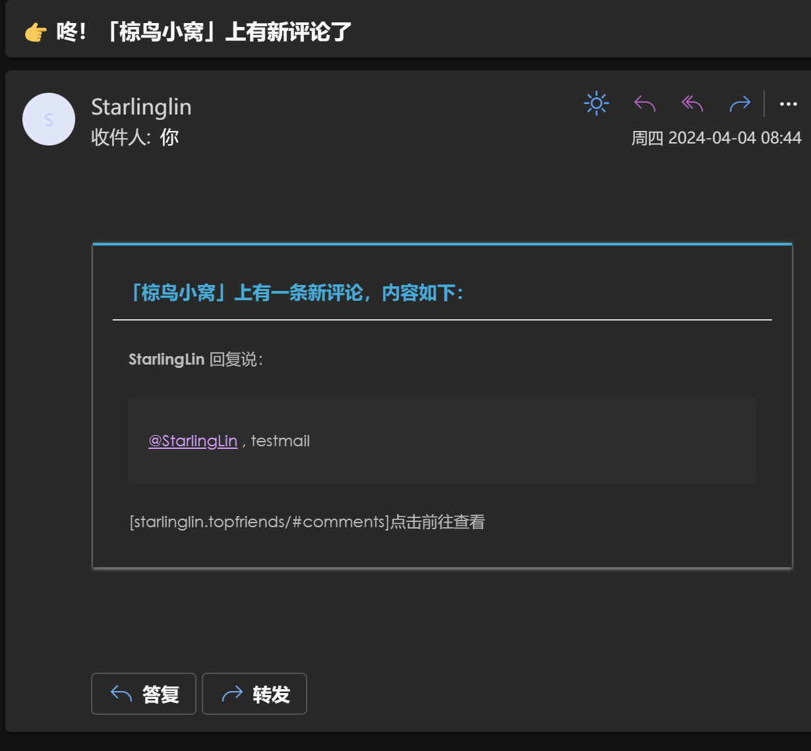

本篇写于 2024 年 4 月 7 日，请注意时效性。
本人在配置 Shoka 主题的 Valine 评论提醒时，发现霜月琉璃对其配置方法描述不够详细且已经过时，故有此文。
原贴链接：
Shoka
文章评论
Valine 的评论系统是基于 LeanCloud 运转的，其评论内容以结构化数据存储在 LeanCloud。
而邮件提醒，也就离不开 LeanCloud 的云引擎功能。原贴给出的 Valine-Admin 和本文给出的 Valine-Admin，都是基于云引擎运作的。
这就不得不提到 LeanCloud 的问题了，LeanCloud 分国内版和国际版双端。对于国内版，云引擎域名必须绑定已经在国内备案的域名，因此很多人都是转向国际版。
但是我转向 LeanCloud 国际版后发现 Shoka 主题预设的 Valine 似乎已经不能在 LeanCloud 国际版正常运作，所有评论都会遇到 403/405，无法传递到 Valine 的服务器，只能使用国内版。
那么再使用原贴的需要绑定域名和添加定时器的 Valine-Admin 就不那么好了。
我最终选择了这个 Valine-Admin。可以正常运作在 LeanCloud 上，收到的邮件提醒如下：
